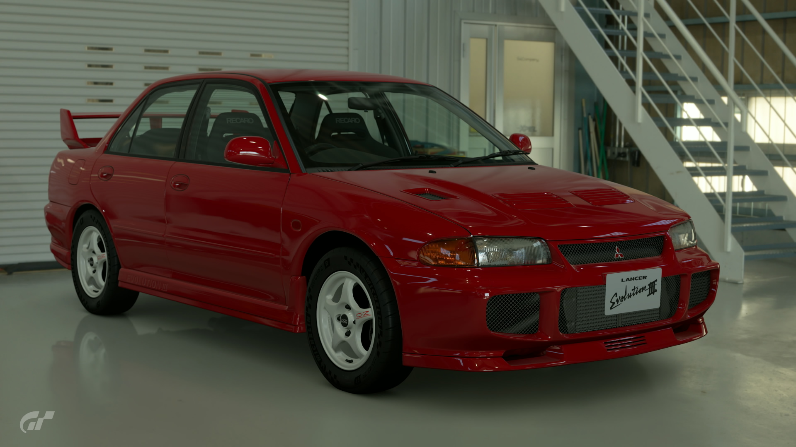
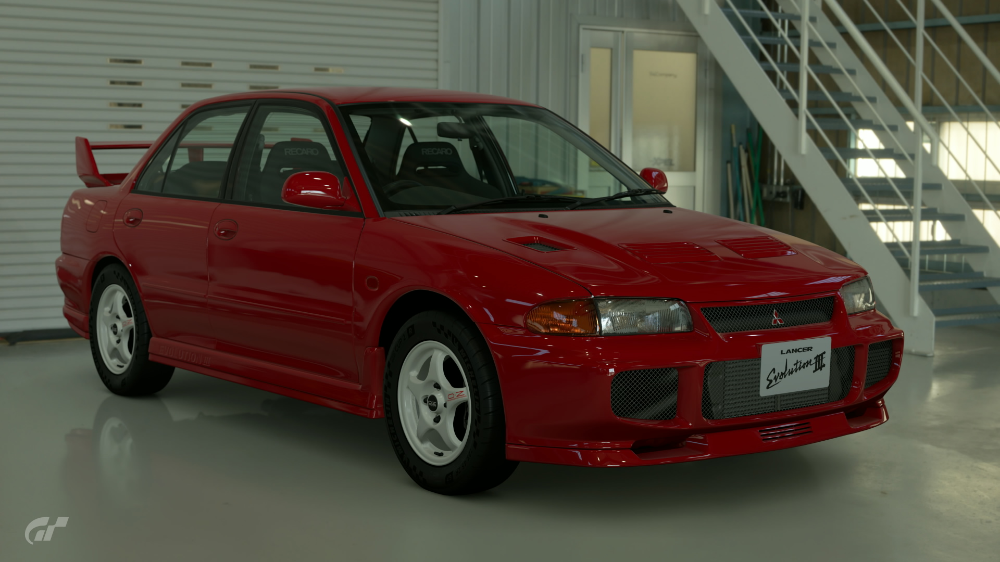

1995 Mitsubishi Lancer Evolution III
The Mitsubishi Lancer Evolution (or 'Evo') is one of the most iconic Japanese cars of the '90s. It was developed as a base car for competing in World Rally Championship events. This is the 3rd-gen model from 1995, the 'Evo III.' It was famously the car that delivered Mitsubishi ace Tommi Mäkinen his first world rally drivers' title. From the wide, open-mouth front bumper to the rear spoiler wing—everything on it was rally-spec. Truly an evolutionary leap from the 1st- and 2nd-gen Evos, it was faster and stronger than its predecessors. What's more, the Evo III was designed to have an anti-lag system from the production stage.
- Used (21350.9 mi)
- Stock
- 5MT
- Saitama, Japan
- Monaco Red
- 264hp
¥1,750,000